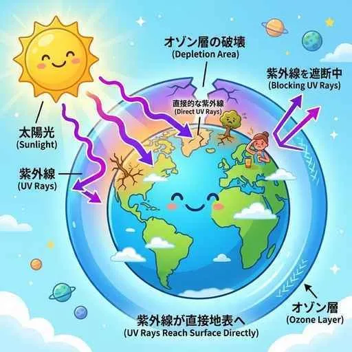

7. 裁判所 ─国の司法機関─
国会が法律を作り、内閣がそれを実行する一方で、人々の間で揉め事が起きたり犯罪が発生したりしたときに、法律を適用して解決する独立した機関が「裁判所」です。公平な裁判を行うため、裁判所には政治の力を排除する厳しい独立ルールがあります。今回は、裁判所の仕組みや裁判の種類、そして近年導入された裁判員制度について詳しく整理します！
1. 司法の役割と「司法権の独立」
法に基づいて争いを解決し、個人の人権や社会の秩序を守る働きを司法（しほう）と呼びます。
公平な裁判を行い、国民の権利を守るためには、裁判所が国会や内閣、あるいは世論の圧力から一切邪魔をされない仕組みが必要です。憲法第76条は、すべての裁判官は他からの干渉を受けず、「良心に従ひ独立してその職権を行ひ、この憲法及び法律にのみ拘束される」と定めています。これを司法権の独立（しほうけんのどくりつ）と呼びます。
【コラム】日本の裁判所の組織構造
裁判所は、国のトップである最高裁判所（さいこうさいばんしょ）（東京に1箇所）と、それ以外の全ての下級裁判所（かきゅうさいばんしょ）に分かれます。
- 下級裁判所の４つの種類：
・高等（こうとう）裁判所（全国8箇所）
・地方（ちほう）裁判所（原則各都道府県に1箇所、北海道は4箇所。最も一般的な第1審を行う）
・家庭（かてい）裁判所（家庭内の揉め事や少年の非行事件を扱う）
・簡易（かんい）裁判所（軽い犯罪や少額の金銭トラブルを扱う）
2. 三審制（さんしんせい）と２つの裁判
① 人権を守る「三審制」
裁判も人間が行うため、事実を誤認したり間違った判断を下したりする可能性があります。そこで、慎重に裁判を重ねて人権を守るため、同じ事件について３回まで裁判を受けられる仕組みを三審制と呼びます。
- 第1審の判決に不服がある場合、第2審の裁判所へ訴え出ることを控訴（こうそ）と呼びます。
- 第2審の判決にさらに不服がある場合、第3審の最高裁判所へ訴え出ることを上告（じょうこく）と呼びます。（控訴と上告をまとめて「上訴」と呼びます）
② 裁判の２大分類（民事裁判と刑事裁判）
| 項目 | 民事（みんじ）裁判 | 刑事（けいじ）裁判 |
|---|---|---|
| 内容 | お金の貸し借りや交通事故の賠償など、個人や企業同士の争い | 殺人や窃盗などの犯罪行為について、有罪か無罪かと刑罰を決める |
| 訴える側 | 原告（げんこく）（被害者など） | 検察官（けんさつかん）（国家の代表） |
| 訴えられた側 | 被告（ひこく） | 被告人（ひこくにん）（※「被疑者」が起訴された姿） |
3. 裁判員制度と「憲法の番人」
① 司法への国民参加：裁判員制度（さいばんいんせいど）
国民の視点や感覚を裁判に反映させ、司法への理解を深めるため、2009年から導入されました。
満18歳以上の一般有権者からランダムに選ばれた６名の裁判員が、３名のプロの裁判官と一緒に話し合い、地方裁判所で行われる重大な刑事裁判（殺人や強盗致死傷など）の「有罪・無罪」および「刑罰の内容（量刑）」を決定します。
② 「憲法の番人」としての違憲立法審査権
国会が作った法律や、内閣が決めた命令が、憲法に違反していないか（合憲か違憲か）を決定する権限を違憲立法審査権（いけんりっぽうしんさけん）と呼びます。すべての裁判所がこの権限を持っていますが、最終的な決定権を持つのは最高裁判所のみであるため、最高裁判所は憲法の番人（けんぽうのばんにん）と呼ばれています。

図1：裁判官と一般国民から選ばれた裁判員が机を囲んで共に判決を下す裁判員制度のイメージ
🔥 この単元のテスト対策・暗記のコツ
-
★
民事と刑事の「当事者」の言葉の違い（最重要・記述！）：
・民事裁判で訴えられた側は「被告」ですが、刑事裁判で訴えられた側は「被告人」です。「人」がつくかつかないかで点数が分かれます！また、刑事で訴えるのは被害者本人ではなく、国家を代表する「検察官」である点も記述の急所です。 -
★
三審制の上訴の言葉の順番：
・第1審から第2審へは「控訴（こうそ）」、第2審から第3審へは「上告（じょうこく）」です。この言葉の順序をテレコにしないように気をつけましょう。 -
★
裁判員制度の適用条件：
・「重大な刑事裁判」の「第1審（地方裁判所）」のみ。民事裁判には適用されず、第2審（控訴審）以降にもありません。選択肢の正誤判定でよくこのポイントが狙われます！